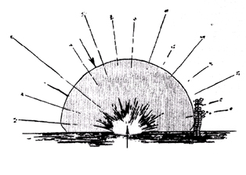
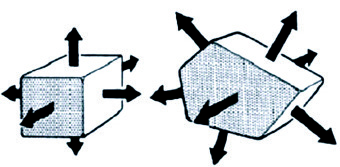
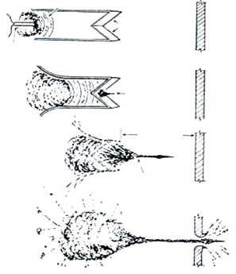
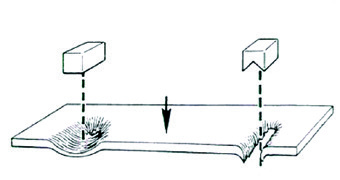

Explosivos - são substâncias capazes de produzir, por uma reação química rápida ou brusca, um grande volume de gases, os quais são elevados a altas pressões e temperaturas pelo calor desprendido na reação (exotérmica). A expan são dos gases produz efeitos mecânicos poderosos, já que uma explosão é a transformação de energia química em trabalho mecânico. Explosão - Uma explosão é o escape súbito de energia, geralmente na forma de gases, acompanhado de altas temperaturas, ondas de choque e ruído. A explosão em que o explosivo é totalmente consumido é denominada explosão de primeira ordem ou de alta ordem e a explosão em que restam resíduos de explosivos não consumidos denomina-se explosão de segunda ordem ou de baixa ordem.
Mecânica - quando a pressão crescente dentro de um recipiente supera a sua resistência estrutural, como ocorre na explosão de uma caldeira a vapor. Química - é a reação química que converte, de forma extremamente rápida, substâncias sólidas ou líquidas em gases. Os gases resultantes terão um volume muito maior do que as substâncias que o geraram. Todos os explosivos comerciais são explosivos químicos. Atômica (nuclear) - resulta da fusão ou fissão do núcleo do átomo, com a transformação direta de matéria em energia, gerando a elevação da temperatura ambiente até um superaquecimento brutal e a conseqüente expansão de enormes massas de ar com efeito destrutivo catastrófico. Bomba - é qualquer artefato confeccionado com uma carga explosiva, con tendo um mecanismo de acionamento, sendo capaz de provocar destruição ou danos por meio da formação de ondas de choque e de fragmentação.
Segurança pessoal - todo procedimento deverá ser orientado, principalmente, pela busca da máxima segurança do técnico em bombas. Prevenção e minimização de riscos - deve-se procurar minimizar os riscos a que estão submetidos os técnicos em bombas, o público envolvido e, por último, o patrimônio. Processo investigatório - os procedimentos anteriores devem sempre levar em consideração uma possível preservação de elementos materiais, que possam auxiliar na condução da investigação criminal.
Além do emprego militar, os explosivos são largamente utilizados em mine ração, pedreiras, abertura de túneis, construção e desobstrução de rodovias e ferrovias, demolições e implosões, fogos de artifício, abertura de poços de petróleo, extinção de incêndios, soldagens, etc.
Sensibilidade A sensibilidade de um explosivo refere-se à facilidade com que ele pode ser iniciado por meio de choque (impacto ou percussão), faísca, calor ou mesmo chama, eletricidade estática, atrito, vibração ou fricção, etc. Os explosivos são dessensibilizados visando a uma maior segurança na sua produção, manuseio, transporte e armazenamento. Exemplos de explosivos sensíveis são: nitroglicerina (NG), pólvoras e explosivos primários. Como exemplos de explosivos pouco sen síveis podemos citar: trinitrotolueno (TNT), Anfo(ammonium nitrate-fuel oil), um explosivo à base de nitrato de amônio (NA) , explosivos plásticos, Composto B. Brisância Capacidade de ruptura do explosivo, mensurada pela rapidez com este atinge a sua máxima pressão. Quanto mais rápido a pressão máxima é atingida, maior a sua capacidade de romper os materiais que o circundam. Velocidade de detonação A velocidade de detonação é a medida, em metros por segundo, da rapidez com que a onda de choque se propaga através de uma coluna de um determinado explosivo. Ela varia de acordo com o diâmetro do cartucho, a granulometria, o grau de confinamento e a densidade do explosivo.
Explosivos militares - apresentam alta estabilidade, baixa sensibilidade e alta brisância. Ex.: TNT, Tetril, explosivos plásticos, dinamites militares, etc. Explosivos comerciais - são mais sensíveis e menos brisantes do que os militares, apresentam baixo custo e menor estabilidade. Ex.: Dinamites, pólvoras, fogos de artifício, cordel detonante, emulsões, etc. Explosivos de fabricação caseira - misturas incendiárias. Ex.: Coquetel Molotov, mistura Armstrong (KClO3-65% + Fósforo vermelho-35%), Napalm, pólvoras caseiras, etc.
Baixos explosivos - são também denominados explosivos de baixa força, deflagrantes ou, ainda, explosivos propulsores. Apresentam uma combustão lenta e progressiva (até 1.000 m/s). Ex.: pólvora negra, que possui uma velocidade de deflagração em torno de 300 m/s e precisa estar confinada para explodir. Altos explosivos primários - são os explosivos intermediários ou de inicia ção (dentro de uma cadeia de fogo) e que fornecem energia de ativação para o explosivo de ruptura, sendo sensíveis ao choque mecânico, calor e fricção. São os explosivos usados na fabricação de detonadores. Apresentam alta velocidade de detonação. Ex.: Fulminato de mercúrio, azida de chumbo, estifnato de chumbo, diazodinitrofenol (DDNP), etc. Altos explosivos secundários - são os chamados explosivos de ruptura, que têm alto poder de brisância. Apresentam alta velocidade de detonação ficando no final de uma cadeia de fogo. Ex.: TNT, explosivos plásticos, etc. Todo alto explosivo secundário precisa de uma carga inicial (detonador ou reforçador), exceto a nitroglicerina. Apresentam uma alta relação pressão de detonação por tempo e não necessitam de confinamento para explodir.
É um baixo explosivo ou explosivo deflagrante, inflamável, sensível, de forma granulada ou em pó, composição variável, deflagração somente quando confinado e iniciação por meio de chama, faísca, atrito, fricção ou filamento incandescente. Os tipos mais comuns de pólvora são: Pólvora negra - conhecida desde a Idade Média pelos chineses, foi introduzida na Europa por Marco Polo em 1290 e tem composição variável (no séc. XVIII, continha 75% de salitre (KNO3), 15% de carvão e 10% de enxofre). Pólvora cloratada - é empregada, com bastante freqüência, em atentados terroristas. O salitre é substituído pelo clorato de potássio (KClO3) na proporção de 70%, contendo ainda, açúcar refinado (15%), carvão vegetal (10%) e enxofre em pó (5%). O clorato pode ser substituído pelo perclorato de potássio (KClO4). Pólvora de base simples (BS) sem fumaça - produzida em 1846, na Alemanha, por Böttger, substituiu a pólvora negra nas munições por ter uma maior potência balística e uma combustão progressiva, sem deixar resíduos. É composta de nitrocelulose gelatinosa, sendo grafitada para retardar sua deterioração. É também denominada pólvora piroxilada ou pólvora coloidal. A nitrocelulose ou algodão-pólvora é produzida pela ação do HNO3 sobre o algodão comum. Pólvora de base dupla (BD) - também é do tipo sem fumaça e contém nitro celulose, nitroglicerina e conservantes. É um propelente usado para fins militares e em munições especiais. O formato pode ser granulado, cilíndrico ou laminar. Pólvora de base tripla (BT) - também é do tipo sem fumaça, contendo nitrocelulose, nitroglicerina e nitroguanidina, sendo usada como propelentes de foguetes e canhões. Balistita - Contém 40% de nitroglicerina e 60% de algodão colódio, que é o algodão-pólvora (BS) de alta nitração, sendo largamente utilizada em bazucas, obuses e morteiros de cano curto, em que é necessária uma máxima velocidade inicial. Velocidade de deflagração entre 600 e 900 m/s. Composites - São misturas de queima rápida, usadas como propelente de foguetes. Contêm clorato de potássio - KClO3 (77%), resina fenólica em pó (17%), enxofre (5%) e alumínio em pó (1%). Também existem composites à base de perclorato de potássio ou perclorato de amônia.
É o mais antigo explosivo primário, de uso militar e comercial extremamente sensível, utilizado em detonadores e espoletas (isolados ou misturados com KClO3), de cor amarela-clara, com velocidade de detonação igual a 5.000 m/s e iniciação por choque, calor, atrito, etc. Gradativamente foi sendo substituído pelo DDNP ou pela azida de chumbo.
É um explosivo primário, sensível, de uso militar e comercial, de cor cinza, utilizado em espoletas, com velocidade de detonação aproximada de 5.100 m/s e com iniciação por meio de choque, atrito, calor, etc. Normalmente, a azida de chumbo é usada na fabricação de espoletas, misturada ao trinitroresorcinato de chumbo (ou estifnato de chumbo), que tem uma velocidade de detonação de 5.200 m/s. Fórmula: Pb(N3)2.
Alto explosivo primário usado na fabricação de detonadores e muito sensível ao calor, choque e fricção, com velocidade de denotação entre 4.400 m/s e 6.900 m/s.
Em 1867, o sueco Alfred Nobel dessensibilizou com êxito a nitroglicerina, mediante a sua saturação com sílica (Kieselguhr) e inventou a dinamite. A desco berta da nitroglicerina ocorrera em 1846, pelo químico italiano Ascanio Sobrero, que a chamou de piroglicerina. As dinamites são altos explosivos secundários, estáveis em seu estado normal, porém, quando em exsudação, tornam-se um explosivo altamente perigoso. Apresentam-se sob a forma de uma massa de cor amarela, encartuchada em papel parafinado (bananas) e sua iniciação se dá por meio de detonadores. As dinamites podem ser dos seguintes tipos: Dinamite gelatinosa comum (Plastil) - contém NG + NC (blasting). Inventada por A. Nobel em 1875. Dinamite amoniacal - usada como booster, contém 70% de NH4OH, 29,3% de nitroglicerina e 0,7% de nitrocelulose. Tem menor brisância. Exemplo: Gelinite. Dinamite de baixo ponto de congelamento - contém dinitrato de etileno glicol (EGDN) em alta concentração (anticongelante). As dinamites apresentam uma composição variável, de acordo com o fabri cante, mas os principais componentes são: nitrocarbonitrato, nitroglicerina, nitro celulose, nitrato de amônio, nitrato de sódio, difenilamina, carbonato de sódio (estabilizador), alumínio em pó e o material absorvente, que pode ser serragem, algodão colódio ou terra de infusório. Variam quanto à velocidade de detonação (entre 3.000 e 6.000 m/s), quanto à resistência à água, maior ou menor capa cidade energética (em cal/cm3), densidade, etc. As dinamites militares contêm, ainda, o hexogênio (RDX) e TNT, os quais elevam a velocidade de detonação para até 6.100 m/s.
Alto explosivo secundário, muito sensível, de usos militar e comercial. Apresenta-se sob a forma de líquido viscoso, denso, incolor, solúvel em etanol e praticamente insolúvel na água e explode com atrito, calor, chama, etc. A temperatura ideal para armazenagem é de 15 a 25ºC. Solidifica-se a 13 graus, tornando-se altamente instável (cisalhamento dos cristais). A nitroglicerina é usada principalmente na fabricação da dinamite e tem velocidade de detonação igual 7.800 m/s. Há um tipo antigel à base de dinitroglicerina (7% a 20%), muito usado sob baixas temperaturas. No processo de fabricação da NG, adiciona-se 5% de etileno glicol, obtendo-se o EGDN, e dessensibiliza-se a mistura com a nitrocelulose, na proporção de 10%.
Produzido inicialmente pelos alemães em 1902, é um alto explosivo secundário, de uso militar, pouco sensível e com alta durabilidade (estável). Apresenta-se sob a forma sólida de blocos fundidos ou petardos de cor amarela e seu ponto de fusão é a 80,5ºC. É impermeável e apresenta uma velocidade de detonação igual a 6.900 m/s, com pressão de detonação variando entre 150 e 250 quilobars, com grande produção de gases tóxicos e iniciação feita por meio de detonadores. É o mais seguro dos explosivos, sendo usado como padrão de referência para outros explosivos.
Alto explosivo secundário, pouco sensível ao choque (percussão) e muito higroscópico. Detona ao ser aquecido a 300ºC. No passado, foi usado em bom bas de artilharia da II Guerra Mundial. Detona a uma velocidade de 4.900 m/s. Há também o picrato de amônia( conhecido como o “explosivo D”) e o picratol [ picrato de amônia (52%) + TNT (48%)].
É um alto explosivo secundário, de uso comercial, encontrado em fertilizan tes agrícolas (adubo nitrogenado). Normalmente, usam-se prills porosos, que, quando adicionados a óleo diesel (5,7%), formam um explosivo com velocidade de detonação igual a 3.000 m/s (Anfo). É estável, de forma granulada, necessi tando de um detonador com reforçador (booster) para provocar a explosão. O Anfo pode tornar-se sensível a uma espoleta, mediante a redução do tamanho das partículas de nitrato de amônia ou quando misturado com cloreto de potássio. Fórmula: NH4N03.
São altos explosivos secundários comerciais de última geração obtidos a partir da dispersão de óleo em solução aquosa de nitrato de amônia. Visando otimizar o balanço de oxigênio durante o processo de fabricação, adiciona-se nitrito de sódio. A velocidade de detonação varia entre 4.000 e 5.000 m/s. A proporção de água varia de 12 a 20%, o que resulta numa baixa densidade (0,90 a 1,25). As emulsões apresentam-se sob a forma encartuchada ou a granel (bombeados ou derramados).
Misturas gelatinosas ou líquidas de nitrato de amônio com sensibilizadores como monometilo aminonitrato, EGDN, TNT, alumínio em pó, etc. Necessitam de booster e apresentam uma velocidade de detonação em torno de 4.000 m/s, sendo muito usadas em explosivos bombeados.
Alto explosivo secundário, de uso militar, principalmente em granadas. É está vel, tem forma granulada, de coloração amarelo-parda, velocidade de detona ção próxima ao TNT (7.050 m/s) e iniciação por meio de detonadores. Fórmula química: 2,4,6 tetranitro-N-metilanilina ou trinitrofenilmetilnitramina, também conhecido como pironite ou tetralite.
Alto explosivo secundário, de uso militar e comercial. É o núcleo branco do cordel detonante, sendo usado em pedreiras para interligar cargas explosivas. O emprego militar é para demolição de pontes, estruturas, túneis, etc. É relativamente estável e o cordel é impermeável. Tem velocidade de detonação de 6.400 m/s, uma pressão de 250 quilobars e é iniciado por meio de detonador. Também é chamado de tetranitrato de pentaeritritol ou pentrite. A nitropenta apresenta como propriedade termodinâmica um alto calor de combustão, sendo possível visualizar a chama no momento da detonação.
São altos explosivos secundários, de uso militar, estáveis, à base de hexogê nio (RDX), octogênio (HMX), nitropenta (PETN) e TNT e uma substância plástica de boa consistência e moldável (agente plastificante). São iniciados por meio de detonador, às vezes necessitando de um booster (reforçador). O RDX puro apre senta uma velocidade de detonação de 8.400 m/s. Os explosivos plásticos são dos seguintes tipos: C2, C3 e C4, sendo o C2 e o C3 de coloração amarelada, contendo RDX, DNT, TNT e nitrocelulose e velocidade de detonação igual a 7.700 m/s, enquanto o C4 apresenta cor branca ou rósea, 91% de RDX e velocidade de detonação a 8.050 m/s. O HMX é um subproduto da obtenção do RDX, sendo muito usado na confecção de cargas ocas. RDX (Research Departament Explosive) = ciclotrimetilenotrinitramina, hexogênio ou ciclonita; HMX (Hight Melting Explosive) = ciclotetrametilenotetranitramina ou octogênio.
Explosivo que se apresenta sob a forma de uma folha flexível, de espessura variável. É composto por RDX (63%) ou PETN, nitrocelulose (8%) e material agre gante (29%). Sua velocidade de detonação é de 7.500 m/s. A versão militar dos EUA é conhecida como datasheet C e, no Brasil, há o mantex, fabricado pela IMBEL. Segundo convenção internacional assinada em Montreal em 1º de março de 1991, os explosivos plásticos receberão uma marcação com a finalidade de facilitar sua detecção por meio dos detectores de vapores explosivos. Os agentes de detecção são o dinitrato de etileno glicol (EGDN), 2, 3 Dimetil-2, 3 dinitro butano (DMNB), para-mononitrotolueno (p-MNT) ou o orto-mononitrotolueno (o-MNT).
Amonal = TNT + nitrato de amônio + alumínio (67:22:11); Anfo = nitrato de amônio + óleo diesel (94:06) + booster; Amatol = nitrato de amônio + TNT (50:50); Coop-Mischung = clorato de potássio + nitrobenzeno (95:5); Clorato de potássio + açúcar (50:50); Pentolite = TNT + PETN (50:50). Usado na fabricação de booster; Torpex (HBX) = RDX + TNT + alumínio em pó (41:41:18). Usado em cargas de torpedos; Composto B = RDX (60%) + TNT (39%) + cera (1%). Usado na fabricação de minas, granadas, cargas moldadas e cabeças de foguetes; Tetritol = tetril + TNT (75:25); PLX (Picatinny Liquid Explosive) = nitrometano (95 ml) + etilonodiamina (5 ml); Tritonal = TNT + alumínio em pó (80:20). Usada em bombas de aviação; Composto A4 = RDX (97%) + cera (3%). Usado na forma prensada para carregamento de espoletas e reforçadores.
Em uma explosão, ocorrem efeitos primários e secundários. Os efeitos primá rios são: onda de pressão explosiva, fragmentação e efeito térmico-incendiário (figura 1). Os efeitos secundários variam em função dos fatores do ambiente onde ocorre a detonação.

EFEITOS PRIMÁRIOS FRENTE DE CHOQUE FRAGMENTAÇÃO EFEITO TÉRMICO/ INCENDIÁRIO
Figura 1 - Onda de pressão explosiva.
O deslocamento de ar é o efeito violento que se processa por meio das ondas de choque, com o aumento e depois a diminuição da pressão atmosférica pro duzida por uma explosão de uma bomba. Forma-se uma onda de alta pressão (pressão positiva) à medida que os gases aquecidos são irradiados, seguida de uma pressão negativa, que ocorre quando a atmosfera comprimida é deslocada e volta rapidamente a preencher o vácuo recém formado, sendo ambas as forças destrutivas. É mais facilmente observado quando o artefato explosivo é colocado em um local confinado. Quanto mais fechado, resistente e com obstáculos ao redor, maior será o dano causado pela força do deslocamento de ar, procurando se expandir e escapar.
Quando ocorre uma explosão, gera-se calor e surgem chamas, que podem provocar incêndios se houver material inflamável nas proximidades.
Ocorre quando o explosivo é confinado em recipientes com pedaços de metal misturados ou colocados ao redor da carga explosiva. A potência de uma explosão está relacionada com o tipo, o formato, a quan tidade e o confinamento do explosivo. Quanto ao tipo de explosivo, devemos considerar a velocidade de detonação, a pressão de detonação e a brisância.
No momento de uma explosão, ocorrem, conjugados e de forma brusca, vários fenômenos físicos, entre eles, geração de calor, elevação e queda de pressão, formação de vácuo e de ondas de choque. As ondas de choque são capazes de produzir efeitos mecânicos, provocando outras explosões a distância, por influência (simpatia). Têm velocidade inicial sufi ciente para produzir uma compressão capaz de provocar a detonação de outra carga explosiva que se encontre próxima. É esse o princípio de funcionamento dos detonadores. O estudo dessas ondas pode ser proveitoso para que se obtenham explosões dirigidas, inclusive na tentativa de neutralizar artefatos explosivos. Efeito cumulativo - ocorre quando as ondas de choque são provocadas por detonações dirigidas, potencializando-se o efeito e obtendo-se pressões bem superiores ao esperado. Efeito Monroe ou efeito bazuca (figuras 3 e 4) - é utilizado para se obter maior pressão no momento da explosão, ocorrendo quando há convergência de várias ondas de choque para um mesmo ponto. É usado em implosões, uma vez que pode ser calculado e direcionado a agir em um ponto menos resistente. A orientação da onda de choque é perpendicular à superfície da carga explosiva (figura 2).

Figura 2 - Orientação das ondas de choque na superfície do explosivo.

CARGA IÔNICA DETONADOR DISTÂNCIA FORMAÇÃO DO JATO
Figura 3 - Concentração das ondas de choque usando o Efeito Monroe.

250g TNT 250g TNT ¨CHAPA DE AÇO = 1cm
Figura 4 - Utilização do Efeito Monroe para cortar uma chapa metálica.
A tabela 1, que trata de danos em materiais, pode ser útil como referência rápida, levando-se em consideração os fatores supracitados.
Tabela 1 - Danos em materiais expostos, em área aberta, ao explosivo TNT.
| TNT (Kg) | Distância da explosão em metros | ||||
|---|---|---|---|---|---|
| Janelas simples (apenas um painel) | Paredes tipo divisória (amianto, madeira) | Paredes de blo cos de concreto ou de concreto não reforçado | Paredes de tijolos ou de concreto reforçado | Pára-brisa de carro | |
| 0,5 | 30-50 | 15-30 | 10-15 | 6-15 | 5-8 |
| 1,0 | 35-60 | 20-35 | 15-20 | 7-20 | 6-9 |
| 2,5 | 40-80 | 25-45 | 20-25 | 9-25 | 8-12 |
| 4,5 | 55-110 | 30-55 | 20-30 | 12-30 | 10-15 |
| 7 | 65-120 | 35-65 | 25-35 | 14-35 | 12-18 |
| 8 | 70-130 | 40-70 | 30-40 | 15-40 | 13-20 |
| 11,5 | 75-140 | 40-75 | 30-40 | 16-40 | 14-21 |
| 13,25 | 80-150 | 45-80 | 30-45 | 17-45 | 15-23 |
| 16 | 85-160 | 50-85 | 35-50 | 18-45 | 15-25 |
| 18 | 90-165 | 50-90 | 35-50 | 19-50 | 16-26 |
| 20,5 | 90-170 | 50-90 | 35-50 | 20-50 | 17-27 |
| 22,5 | 95-175 | 50-90 | 35-50 | 20-50 | 18-29 |
22,5 95-175 50-90 35-50 20-50 18-29 Para estudos de danos provocados por outros explosivos, pode ser utilizada a tabela 2, para a conversão de massa do TNT por meio da eficiência relativa.
Tabela 2 - Conversão de massa do TNT por meio da eficácia relativa.
| Explosivo | Fator de eficácia relativa |
|---|---|
| TNT | 1,0 |
| Pólvora negra | 0,50 |
| Nitroglicerina | 1,40 |
| C-4 (RDX + Plastificante) | 1,30 |
| Composto B (RDX 60% + TNT 39% + Cera 1%) | 1,33 |
| C-2 | 1,26 |
| Tetril | 1,30 |
| Nitrocelulose | 1,25 |
| Anfo | 0,52 |
| Nitropenta(PETN) | 1,45 |
| Hexogênio(RDX) | 1,50 |
| Octogênio(HMX) | 1,50 |
| Nitrato de amônia | 0,56 |
| Dinamite 40% | 0,65 |
| Dinamite 60% | 0,83 |
Fonte - ATF Os efeitos das tabelas 1 e 2 levam em conta apenas a propagação das ondas de choque. Entretanto, o operador deverá sempre considerar, para sua segurança pessoal e minimização dos riscos, o perigo real representado pelos estilhaços originados do próprio artefato explosivo e dos objetos que o circundam, os quais são lançados em altas velocidades a grandes distâncias.
| TNT (kg) | Distância da explosão (em metros) | ||
|---|---|---|---|
| Possibilidade de ruptura dos tímpanos | Possibilidade de dano aos pulmões | Possibilidade de morte | |
| 0,5 | 5,0 | 2,0 | 1,5 |
| 1,0 | 6,0 | 3,0 | 2,0 |
| 2,5 | 9,0 | 4,0 | 2,5 |
| 4,5 | 11,0 | 5,0 | 3,0 |
| 7,0 | 12,0 | 5,5 | 3,75 |
| 9,0 | 13,0 | 6,0 | 4,0 |
| 11,5 | 14,0 | 6,5 | 4,33 |
| 13,5 | 15,0 | 7,0 | 4,66 |
| 16,0 | 16,0 | 7,33 | 4,66 |
| 18,0 | 17,0 | 7,66 | 5,0 |
| 20,5 | 17,5 | 8,0 | 5,25 |
| 22,5 | 18 | 8,25 | 5,25 |